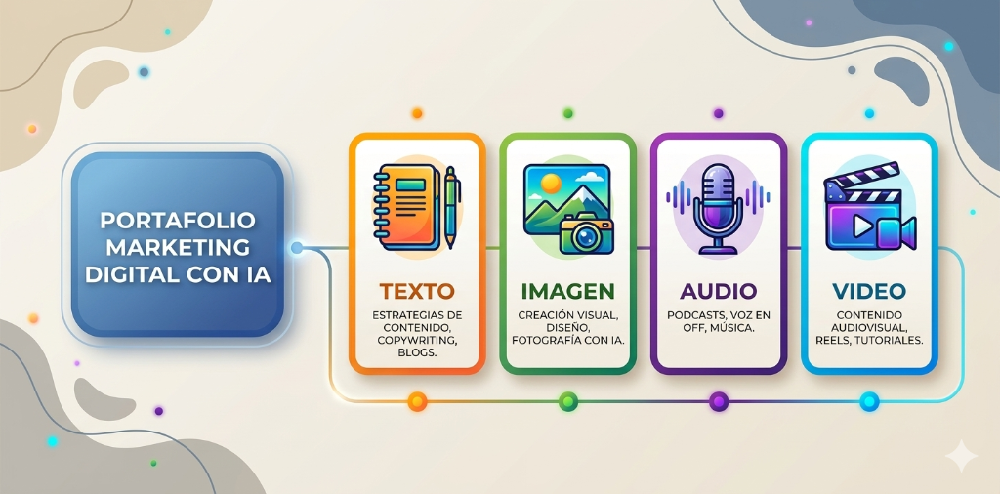

Ver transcripción
Elemento 2: Generar. Con la estrategia aprobada, produces el contenido. Texto, imagen, audio y video, todos documentados con sus prompts e iteraciones.
En 4 desempeños más uno transversal de validación se observará tu práctica. Lo que se busca ver no es solo que generes contenido bonito: debes demostrar el proceso completo, desde la justificación de la herramienta hasta las iteraciones y la verificación de sesgos.
3.1 Visión general
- Generar contenido de texto: justificar la herramienta seleccionada, escribir el prompt con los 7 componentes (rol, contexto, tarea, audiencia, formato, tono y restricciones), verificar coherencia con la estrategia, validar sin sesgos y realizar al menos 3 iteraciones documentadas.
- Generar contenido de imagen: seleccionar la herramienta adecuada al tipo de imagen requerido, elaborar el prompt con parámetros de sujeto, estilo, formato y restricciones, verificar coherencia visual con la marca, validar sin sesgos ni distorsiones anatómicas y realizar las iteraciones necesarias.
- Generar contenido de audio: seleccionar la herramienta para narración por voz o música, elaborar el prompt con los parámetros de tipo/guión/género/tono/ritmo/emoción, verificar coherencia con la marca y validar calidad de voz/sonido.
- Generar contenido de video: seleccionar la herramienta para el tipo de video requerido, elaborar el prompt con escena, sujeto, ambiente, estilo visual, iluminación y formato, verificar consistencia visual entre escenas y realizar las iteraciones necesarias.
- Validar y entregar el portafolio completo: presentar todos los contenidos a la persona responsable, explicar que son veraces, sin sesgos y respetuosos de la propiedad intelectual, obtener la aprobación y entregar los portafolios documentados.
3.2 Cómo se te evaluará en este elemento
El segundo paso del ciclo para el desarrollo de contenido de marketing digital, es la creación de contenido, que corresponde con el Elemento 2 del Estándar de competencia C: Generar contenido de marketing digital con IA. Recuerda que la evaluación de competencias, se compone por la valoración de diferentes tipos de evidencias, en la fase inicial de preparación, deberás demostrar lo siguiente:
| Tipo de evidencia | Cantidad | Cómo se valora |
|---|---|---|
| Desempeños observables | 4 desempeños de generación + 1 de validación | Te observan directamente mientras generas cada tipo de contenido. Se valora el proceso completo: selección de herramienta, construcción del prompt, iteraciones y verificación de sesgos. |
| Productos entregables | 4 portafolios (texto, imagen, audio, video) | Presentas los portafolios que elaboraste para su contraste contra los criterios del F21. Mayor peso en la coherencia con la estrategia aprobada y la documentación del proceso. |
| Conocimientos | 3 áreas | Cuestionario sobre redacción persuasiva, especificaciones técnicas de plataformas y propiedad intelectual en contenido IA. |
| Actitudes, hábitos y valores | 2 (Orden, Responsabilidad) | Te observarán para verificar que organizas el contenido conforme a la planificación (Orden) y que verificas veracidad y originalidad antes de presentar (Responsabilidad). |
3.3 Los desempeños del Elemento 2
Desempeños a demostrar
Siguiendo con el caso del consultor Martín y la cafetería La Cuesta, para efectos de evaluación, Martín tuvo que demostrar en vivo y con su evaluador observando, que es capaz de crear los siguientes tipos de contenido con herramientas o plataformas de IA:
- Texto de marketing digital
- Imagen de marketing digital
- Audio de marketing digital
- Video de marketing digital
Finalmente, se le solicitó demostrar que valida el contenido de marketing digital generado con la o las herramientas o plataformas de IA.
Revisemos ahora el detalle de cada uno de los desempeños.
Desempeño 2.1 · Crea contenido de texto de marketing digital con herramientas/plataformas de IA
Durante el desempeño, se observará el proceso completo de generación de texto: desde la justificación de la herramienta hasta las iteraciones finales.
A · Selección de herramienta
Texto del estándar (F21): "Justificando la selección de la(s) herramienta(s)/plataforma(s) de IA de acuerdo al contenido de texto por generar."
Qué significa para ti: No es suficiente decir "usé ChatGPT". Debes explicar POR QUÉ esa herramienta es la adecuada para este tipo de texto (post de Instagram vs. mensaje WhatsApp vs. copy de anuncio). Lo que se valora es que tu selección sea argumentada, no casual.
B · Prompt de texto
Texto del estándar (F21): "Escribiendo el prompt de contenido de texto que incluya al menos el rol, el contexto, la tarea, la audiencia, el formato, el tono de comunicación y las restricciones."
Qué significa para ti: Los 7 componentes son obligatorios. "Escribe un post para Instagram" no es un prompt válido para el F21. Un prompt completo sería: "Eres copywriter especialista en cafés de especialidad (rol). La Cuesta es una cafetería en zona universitaria que tuesta su propio café (contexto). Escribe un post de Instagram (tarea) para estudiantes universitarios de 18-28 años (audiencia) en formato de máximo 150 caracteres más 5 hashtags (formato), con tono cálido y cercano (tono), sin mencionar cadenas comerciales ni comparaciones directas con competidores (restricciones)."
C · Coherencia con marca
Texto del estándar (F21): "Explicando cómo el contenido generado es coherente con la identidad de marca y los lineamientos de la estrategia aprobada."
Qué significa para ti: Después de generar el texto, debes poder señalar explícitamente qué elementos del resultado corresponden a la voz de marca definida en la estrategia. Por ejemplo: "El tono cálido del párrafo 2 corresponde al lineamiento de marca 'cercano y auténtico'; el uso de 'tostamos con amor' refleja el valor de artesanía que documentamos en el expediente."
D · Validación y sesgos
Texto del estándar (F21): "Realizando las pruebas de validación del contenido de texto generado y eliminación de sesgos."
Qué significa para ti: Antes de aprobar el texto, revisas: ¿contiene afirmaciones falsas o no verificables? ¿Excluye o estereotipa a algún grupo de la audiencia? ¿Usa vocabulario ofensivo de manera encubierta? ¿Las afirmaciones sobre el café son verificables? Documenta qué revisaste y qué encontraste (incluso si no encontraste sesgos).
E · Iteraciones
Texto del estándar (F21): "Efectuando los ajustes al contenido de texto generado mediante al menos tres iteraciones de prompts/las iteraciones requeridas hasta cumplir los criterios de calidad establecidos en la estrategia."
Qué significa para ti: Tres iteraciones mínimas, documentadas. Cada iteración debe mostrar qué cambiaste en el prompt y por qué. El portafolio debe incluir las versiones intermedias, no solo la final. La mejora progresiva es parte de la evidencia.
Desempeño 2.2 · Crea contenido de imagen de marketing digital con herramientas/plataformas de IA
A · Selección de herramienta
Texto del estándar (F21): "Justificando la selección de la(s) herramienta(s)/plataforma(s) de IA de acuerdo al tipo de contenido de imagen requerido por la estrategia."
Qué significa para ti: Distintas herramientas tienen distintas fortalezas. Midjourney para imágenes artísticas, DALL-E o Imagen para realismo fotográfico, Canva IA para diseño de posts con texto integrado. Justifica la selección en función del tipo de imagen que la estrategia requiere.
B · Prompt de imagen
Texto del estándar (F21): "Elaborando el prompt/Seleccionando en la herramienta de IA para contenido de imagen con los parámetros de sujeto, el estilo, el formato y las restricciones."
Qué significa para ti: Los 4 parámetros son obligatorios. Ejemplo: "Sujeto: taza de café negro en primer plano con vapor visible. Estilo: fotografía de producto con paleta cálida tierra, sin personas. Formato: 1:1 (1080x1080px). Restricciones: sin logos de otras marcas, sin texto superpuesto, sin filtros de Instagram."
C · Coherencia visual
Texto del estándar (F21): "Verificando que el contenido de imagen generado sea coherente con la identidad de marca y los lineamientos de la estrategia aprobada."
Qué significa para ti: La imagen cumple la paleta de colores, el estilo fotográfico y los lineamientos visuales documentados en la estrategia de La Cuesta. Si la estrategia define "tonos cálidos tierra, sin personas, ambiente de cafetería artesanal", la imagen debe reflejar exactamente eso.
D · Validación y sesgos
Texto del estándar (F21): "Realizando las pruebas de validación del contenido de imagen generado y eliminación de sesgos."
Qué significa para ti: Revisa distorsiones anatómicas (manos con dedos de más, objetos deformados), elementos que excluyan involuntariamente a algún grupo, o representaciones estereotipadas. Una imagen con 6 dedos visibles en primer plano es un error de validación no corregido.
E · Iteraciones
Texto del estándar (F21): "Ajustando contenido de imagen generado mediante al menos tres iteraciones de prompts/las iteraciones requeridas hasta cumplir los criterios de calidad establecidos en la estrategia."
Qué significa para ti: Documenta las 3+ versiones intermedias. En cada iteración, señala qué parámetro ajustaste y por qué: "iteración 1: imagen demasiado oscura → ajuste: agregué 'iluminación natural suave, exposición alta'. Resultado: mejoró pero el ángulo no mostraba el vapor → iteración 2: agregué 'vista lateral a 45 grados'..."
Desempeño 2.3 · Crea contenido de audio de marketing digital con herramientas/plataformas de IA
A · Selección de herramienta
Texto del estándar (F21): "Seleccionando la(s) herramienta(s)/plataforma(s) de IA correspondiente(s) al tipo de contenido de audio para narración por voz/música de acuerdo con lo requerido por la estrategia."
Qué significa para ti: Para narración TTS (Text-to-Speech): ElevenLabs, Google TTS, Azure Cognitive Speech. Para música generativa: Udio, Suno, MusicGen. La elección depende del tipo de contenido que la estrategia requiere. Justifica la selección.
B · Parámetros de audio
Texto del estándar (F21): "Elaborando el prompt/Seleccionando en la herramienta de IA para narración por voz/música con los parámetros de tipo/guión/género/tono/ritmo/emoción/letra/referencia de acuerdo con los requerimientos de la estrategia."
Qué significa para ti: Para narración: especifica el guión completo, la voz (género, acento, edad percibida), el tono (cálido, profesional, íntimo) y el ritmo. Para música: género, tempo, instrumentación y emoción buscada. Todos los parámetros que usaste deben estar documentados.
C · Coherencia con marca
Texto del estándar (F21): "Verificando que el contenido de audio generado sea coherente con la identidad de marca y los lineamientos de la estrategia aprobada."
Qué significa para ti: Si la voz de La Cuesta es "cercana, cálida y auténtica", el audio debe sonar así. Una voz robótica o excesivamente formal contradice la identidad de marca, aunque técnicamente sea correcta.
D · Validación y sesgos
Texto del estándar (F21): "Realizando las pruebas de validación del contenido de audio generado y eliminación de sesgos."
Qué significa para ti: Escucha el audio completo: ¿hay palabras pronunciadas incorrectamente? ¿El acento es apropiado para la audiencia de La Cuesta? ¿El guión contiene afirmaciones no verificables? ¿La voz elegida representa de manera justa a la clientela universitaria?
E · Iteraciones
Texto del estándar (F21): "Repitiendo el proceso de generación de audio hasta obtener el resultado que cumpla con los criterios de calidad establecidos en la estrategia."
Qué significa para ti: Documenta cada versión generada y qué problema resolviste en cada ajuste. La dicción, el ritmo y la naturalidad de voz son los criterios de calidad que el F21 especifica para el Producto 2.3.
Desempeño 2.4 · Crea contenido de video de marketing digital con herramientas/plataformas de IA
A · Selección de herramienta
Texto del estándar (F21): "Seleccionando la(s) herramienta(s)/plataforma(s) de IA correspondiente(s) al tipo de contenido de video requerido por la estrategia."
Qué significa para ti: Runway Gen, Pika Labs, Kling, Sora, Higgsfield — cada herramienta tiene fortalezas distintas en duración, realismo, control de personaje y coherencia entre escenas. La elección debe corresponder al tipo de video que la estrategia requiere (Reel de proceso, video educativo, animación de producto).
B · Prompt de video
Texto del estándar (F21): "Elaborando el prompt con instrucciones específicas que incluyan al menos la escena, el sujeto, el ambiente, el estilo visual, la iluminación y el formato."
Qué significa para ti: Los 6 parámetros son obligatorios. Ejemplo para el Reel del tueste: "Escena: interior de una tostadora artesanal pequeña girando. Sujeto: granos de café pasando de verde a marrón oscuro. Ambiente: taller artesanal cálido con luz natural. Estilo visual: documental íntimo, cámara fija. Iluminación: natural lateral, tonos cálidos dorados. Formato: 9:16 (Reel), 15 segundos."
C · Coherencia con marca
Texto del estándar (F21): "Verificando que el contenido de video generado sea coherente con la identidad de marca y los lineamientos de la estrategia aprobada."
Qué significa para ti: El video refleja la estética de La Cuesta: artesanal, auténtico, tonos cálidos. Si la estrategia define ese estilo, el video no puede tener iluminación fría o estética industrial.
D · Validación y sesgos
Texto del estándar (F21): "Realizando las pruebas de validación del contenido de video generado y eliminación de sesgos."
Qué significa para ti: Revisa: consistencia física entre escenas (el mismo objeto no puede cambiar de forma entre cortes), ausencia de distorsiones, coherencia del mensaje con la realidad de la MiPyME. Un video que muestra un espacio diferente al de La Cuesta o personas que no representan a su clientela real tiene sesgos de representación.
E · Iteraciones
Texto del estándar (F21): "Ajustando el contenido de video generado mediante al menos tres iteraciones de prompts/las iteraciones requeridas hasta cumplir los criterios de calidad establecidos."
Qué significa para ti: La consistencia visual entre escenas es el criterio más exigente del video con IA. Documenta cuántas iteraciones necesitaste para lograr que el personaje, los objetos y la iluminación fueran consistentes a lo largo del clip.
Desempeño 2.5 · Valida el portafolio completo con la persona responsable
Estas 4 características aplican a todos los tipos de contenido una vez que el portafolio está completo:
F · Presentación ante la persona responsable
Texto del estándar (F21): "Presentando el contenido de texto/imagen/audio/video ante la(s) persona(s) responsable(s) del marketing digital en la MiPyME."
Qué significa para ti: Presentas el portafolio completo en una sesión estructurada con Mariana. No envías archivos por WhatsApp sin contexto — presentas pieza por pieza, explicando cómo cada una responde a la estrategia aprobada.
G · Veracidad y propiedad intelectual
Texto del estándar (F21): "Explicando que el contenido final de texto/imagen/audio/video es veraz, sin sesgos y respeta los derechos de propiedad intelectual de terceros."
Qué significa para ti: Debes poder explicarle a Mariana: qué herramientas de IA usaste y bajo qué términos de uso comercial, si el contenido puede usarse comercialmente sin atribución, y que las afirmaciones sobre el café son verificables. Esto forma parte de tu responsabilidad profesional.
H · Aprobación
Texto del estándar (F21): "Obteniendo la aprobación de los contenidos por parte la(s) persona(s) responsable(s) del marketing digital en la MiPyME."
Qué significa para ti: La aprobación debe quedar documentada: correo con "apruebo el portafolio adjunto", firma en el documento del portafolio o captura de pantalla de la conversación donde Mariana da el visto bueno.
I · Entrega del portafolio
Texto del estándar (F21): "Entregando los portafolios de contenidos de texto, imagen, audio y video documentados a la(s) persona(s) responsable(s) del marketing digital en la MiPyME."
Qué significa para ti: Entrega formal de los 4 portafolios completos (incluyendo prompts, versiones intermedias y versión final) a Mariana. La entrega puede ser digital (carpeta compartida, correo con archivos) pero debe estar documentada.
para el Desempeño 2.5 · Valida el portafolio completo con la persona responsable, podriamos agregar un pequeño video que ejemplifique el desempeño de demostrar y explicar a Mariana
3.4 Los productos del Elemento 2

Producto 2.1 · El contenido de texto del portafolio de marketing digital generado con IA, documentado
- Especifica la herramienta de IA utilizada para la generación de contenido de texto.
- Incluye la estructura del prompt/contenido de referencia para generación de contenido de texto que incluya al menos el rol, el contexto, la tarea, la audiencia, el formato, el tono de comunicación y las restricciones.
- Contiene la versión final del texto generada con apoyo de la herramienta/plataforma de IA para la(s) plataforma(s) digital(es) de destino.
- Cumple con los criterios de calidad en cuanto a originalidad y coherencia con la marca.
- Está redactado de forma clara, precisa y con apego a reglas de redacción y ortografía.
- Contiene los beneficios y llamados a la acción.
- Se adapta al formato de la(s) plataforma(s) digital(es) de destino.
Producto 2.2 · El contenido de imagen del portafolio de marketing digital generado con IA, documentado
- Especifica la herramienta de IA utilizada para la generación del contenido de imagen.
- Incluye la estructura del prompt/imagen de referencia para la generación de contenido de imagen.
- Contiene la versión final de imagen generada con la herramienta/plataforma de IA para la(s) plataforma(s) digital(es) de destino.
- Cumple con los criterios de calidad en cuanto a la coherencia visual con la marca, coherencia anatómica y física.
- Es congruente con el requerimiento y el contexto/realidad.
- Tiene la relación de aspecto acorde con la(s) plataforma(s) digital(es) de destino.
Producto 2.3 · El contenido de audio del portafolio de marketing digital generado con IA, documentado
- Especifica la herramienta de IA utilizada para la generación del contenido de audio.
- Incluye el prompt/los parámetros de contenido de audio de narración por voz/música en la herramienta de IA elegida.
- Contiene la versión final de audio generada con la herramienta/plataforma de IA para la(s) plataforma(s) digital(es) de destino.
- Cumple con los criterios de calidad en cuanto a la claridad de voz/sonido, dicción/ritmo y la naturalidad de voz/sonido.
- Tiene coherencia con la marca.
Producto 2.4 · El contenido de video del portafolio de marketing digital generado con IA, documentado
- Especifica la herramienta de IA utilizada para la generación de contenido de video.
- Incluye la estructura del prompt/video/imagen de referencia para la generación de contenido de video.
- Contiene la versión final de video generada con la herramienta/plataforma de IA para la(s) plataforma(s) digital(es) de destino.
- Tiene coherencia narrativa con inicio, desarrollo y cierre definidos, así como claridad del mensaje e inclusión de llamado a la acción.
- Tiene consistencia visual y física de los elementos entre escenas y coherencia con la identidad de la marca.
- Cumple con la calidad técnica con respecto a la resolución, formato y duración adecuados a la plataforma digital.
- Tiene calidad de audio con respecto a la pronunciación/entonación/sonido(s) y claridad.
- Cumple con los criterios de calidad en cuanto a originalidad y coherencia con la marca.
Templates descargables — Elemento 2
El Elemento 2 produce 4 portafolios de contenido: uno por cada formato que generarás con IA (texto, imagen, audio y video). Cada template incluye dónde documentar el prompt, la herramienta usada y el resultado final. El portafolio de texto suele ser el más extenso porque requiere registrar la estructura completa del prompt.
3.5 Los conocimientos del Elemento 2
| Área de conocimiento | Nivel | Lo que debes poder hacer |
|---|---|---|
| Técnicas de redacción persuasiva para marketing digital: estructura AIDA. PAS. Storytelling. Llamados a la acción. | Aplicación | Aplicar la estructura AIDA (Atención-Interés-Deseo-Acción) o PAS (Problema-Agitación-Solución) a un texto real de la MiPyME, e identificar por qué un CTA es efectivo o no en el contexto de la plataforma. |
| Especificaciones técnicas de contenido por plataforma digital: dimensiones de imagen. Duración de video. Formatos admitidos. | Comprensión | Indicar las especificaciones técnicas correctas para los formatos más comunes: post cuadrado Instagram (1080x1080, 1:1), Reel (1080x1920, 9:16), Story (1080x1920, hasta 15s), post Facebook, video YouTube Shorts. |
| Consideraciones de propiedad intelectual en contenido generado por IA: limitaciones de uso comercial. Atribución. Originalidad. Derechos de autor aplicables. | Comprensión | Explicar qué términos de uso comercial aplican a las principales herramientas de IA generativa, cuándo se requiere atribución y qué riesgos de derechos de autor existen al usar contenido generado con IA en campañas comerciales. |
3.6 Glosario operativo del Elemento 2
| Término | Definición conforme al F21 |
|---|---|
| Iteración de prompt | Se refiere al proceso de ajuste y refinamiento sucesivo de las instrucciones proporcionadas a la herramienta de IA para mejorar la calidad del contenido generado. |
| Prompt | Se refiere a la instrucción o conjunto de instrucciones que se proporcionan a una herramienta de IA generativa para obtener un resultado específico. |
| Relación de aspecto | Se refiere a la proporción matemática entre el ancho y el alto de una imagen, video o pantalla. Se representa con dos valores separados por dos puntos, como 16:9, 4:3 o 1:1, y define la forma visual del contenido sin indicar su tamaño en píxeles. |
| Sesgos | Se refiere a cualquier distorsión sistemática que hace que los resultados de un sistema sean menos justos, menos precisos o representativos para determinados grupos o contextos. |
Terminaste el Elemento 2 · Generar contenido con IA
Ya dominas cómo generar contenido de marketing digital usando herramientas de IA. Lo que sigue: implementar ese contenido en los canales digitales de la MiPyME.